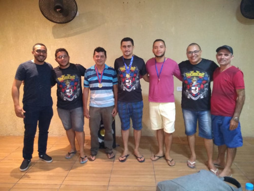
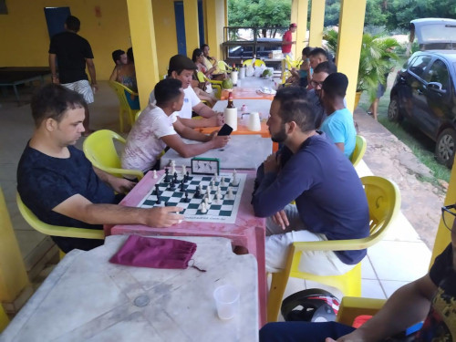

Bem-vindo ao Xadrez Trizidelense.
O ponto de encontro da estratégia, da concentração e da paixão pelo xadrez em Trizidela do vale e região!
Criado em 2018 o clube tem o objetivo de promover o xadrez que é um verdadeiro exercício para o cérebro de todas as idades. Ele desenvolve drasticamente a concentração, o raciocínio lógico e a capacidade de planejamento estratégico, ensinando a pensar vários passos à frente. Além disso, o jogo cultiva a paciência e a tomada de decisão sob pressão, mostrando como analisar consequências e aprender tanto com as vitórias quanto com as derrotas.
Mais que um Jogo: A Trajetória do Clube de Xadrez Trizidelense
Para os moradores de Trizidela do Vale, no Maranhão, o xadrez é mais do que apenas um jogo de tabuleiro; é um pilar de comunidade, estratégia e amizade. No centro desse movimento está o Clube de Xadrez Trizidelense, uma organização que, desde sua fundação, vem transformando o cenário do esporte-ciência na região.
O Início: A Fundação em 2018
O clube nasceu oficialmente em 2018, fruto da paixão de um grupo de entusiastas locais que viam no xadrez uma poderosa ferramenta de desenvolvimento intelectual e social. O objetivo inicial era simples: criar um ponto de encontro regular onde enxadristas, de iniciantes a veteranos, pudessem praticar, aprender e, acima de tudo, fomentar o xadrez na cidade. O que começou com encontros informais rapidamente ganhou estrutura. A fundação do clube marcou o início de uma nova era para o xadrez em Trizidela, oferecendo um espaço organizado para o crescimento e a popularização do esporte.
Competição e Desenvolvimento Regional
Desde o seu início, o Clube de Xadrez Trizidelense entendeu que a competição saudável é vital para o crescimento dos jogadores. O clube não apenas participa ativamente do circuito regional, marcando presença em eventos ligados à Federação Maranhense de Xadrez (FEMAX), mas também se tornou um anfitrião. Todos os anos, o clube organiza competições que atraem jogadores de Trizidela e de cidades vizinhas. Eventos como o Campeonato Trizidelense de Xadrez já se tornaram marcos no calendário local. Estes torneios anuais são essenciais para:
- Revelar novos talentos: Dando oportunidade para jovens jogadores testarem suas habilidades.
- Elevar o nível técnico: A troca de experiências com jogadores de outras cidades enriquece a todos.
- Manter a chama acesa: A regularidade das competições mantém a comunidade engajada e motivada durante todo o ano.
O Cherrasco: A Confraternização Anual
Se os torneios alimentam o espírito competitivo, é no final do ano que o clube mostra sua verdadeira força: o senso de comunidade. O já tradicional churrasco de confraternização é o evento mais aguardado pelos membros. Mais do que celebrar as vitórias e os troféus conquistados ao longo do ano, o churrasco é o momento de relaxar, deixar o tabuleiro de lado e fortalecer os laços de amizade. É a celebração da família que se formou em torno do xadrez. Entre uma partida amistosa e outra, membros, amigos e familiares se reúnem para celebrar um ano de aprendizado e companheirismo, provando que, no Clube de Xadrez Trizidelense, cada peão e cada rei fazem parte de algo muito maior.
